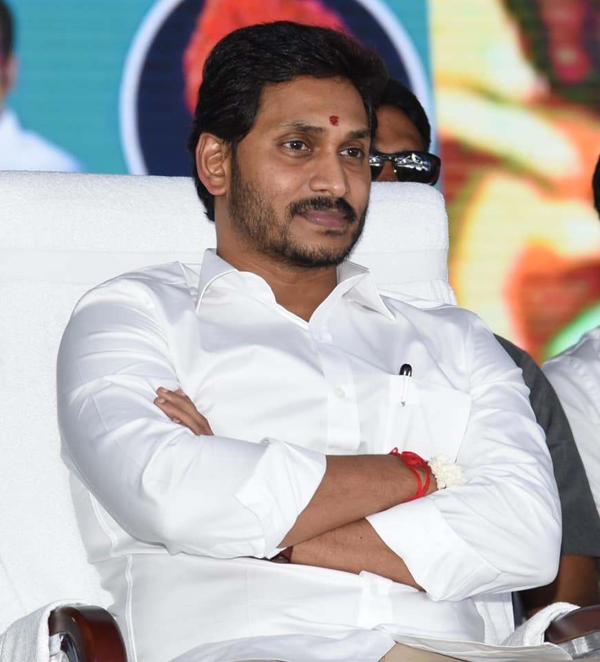

వై.ఎస్. జగన్ మోహన్ రెడ్డి చిన్నప్పటినుంచి రాజకీయాల్లో ఆసక్తి చూపించారు. ఆయన తండ్రి వై.ఎస్. రాజశేఖర్ రెడ్డి, ఆంధ్రప్రదేశ్ ముఖ్యమంత్రిగా ఉన్నప్పుడు ప్రజల సంక్షేమ కార్యక్రమాలు చేపట్టడం ద్వారా జగన్ రాజకీయాల్లో ఆసక్తి పెంచుకున్నాడు. 2009లో తండ్రి అకస్మాత్తుగా మరణించిన తర్వాత, జగన్ తన తండ్రి ఆశయాన్ని కొనసాగిస్తూ ప్రజల మధ్య చేరి, వారి సమస్యలను స్వయంగా గ్రహించారు. చిన్నపాటి ప్రాధాన్యతలు, వ్యక్తిగత కష్టాలు, రాజకీయ నిర్లక్ష్యాలను ఎదుర్కొని ఆయన రాజకీయంలో స్థిరమైన స్థానం సంపాదించారు.
జగన్ మోహన్ రెడ్డి అనేక రాజకీయ బహిష్కారాలు, ఎన్నికల లో విఫలతలు ఎదుర్కొన్నారు. కానీ ఆయన ప్రజల సమస్యలపై దృష్టి సారించడం, గ్రామాల్లో నేరుగా చేరి సంక్షేమ కార్యక్రమాలు చేపట్టడం ద్వారా తన ప్రజాప్రముఖ్యతను పెంచారు. పార్టీ స్థాపన, ఎన్నికల ప్రణాళికలు, రాజకీయ వ్యూహాలను సక్రమంగా అమలు చేయడం ద్వారా 2019లో ఆయన అత్యధిక మెజారిటీతో ఆంధ్రప్రదేశ్ ముఖ్యమంత్రిగా ఎన్నికయ్యారు. తన రాజకీయ జీవితంలో ఎదుర్కొన్న సమస్యలను, పార్టీ వ్యతిరేక చర్యలను, మరియు వ్యక్తిగత కష్టాలను అధిగమిస్తూ జగన్ ప్రజల హృదయాల్లో స్థానం సంపాదించారు.
Website by Ajay Prem Kumar